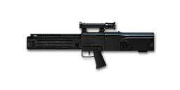
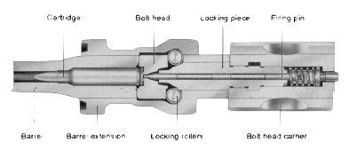
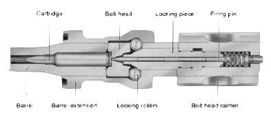

Rifles
The Gewehr series of rifles.
H&K G11
 The H&K G11 was a joint project with defense and chemical company Dynamint Noble. The G11 project was a prototype assault rifle which had ambossions to be the standard rifle for the German Army. The two companies worked with concepts in 1964 but only really got back funding from the government with a development contract in 1974. However by 1978 the German government and H&K realised that development time for this rifle would not meet the NATO rifle trials. Even with the government pulling out of the contract for the G11 H&K and Dynamint Noble decided to carry on with the project, there were a few customers that were still hooked on the concept of the rifle. H&K and DN continued developing the rifle, sending it to the 1984 United States advanced rifle trial. Being included in this trail sparked an interest by the German Government again, they then put the rifle in test trials. The G11 uses an gas operated rotary action which has the caseless ammunition 90 degrees from the barrel. The ammo is then dropped and rotated into the chamber. The round is then fired and thanks to the G11’s caseless system there is no need to eject any kind of casing. This leads into the rifle's unique 3 round recoilless burst firing mode, because no casing needs to be ejected. ammunition just needs to be fed into the chamber. Similar to the Nikonov An-94 assault rifles 2 round recoilless system. The G11 fires rounds while the barrel is reciprocating backwards, resulting in a more accurate 3 rounds instantly on target.
H&K G3
The H&K G3 select fire battle rifle was developed in the 1950’s in collaboration with spanish development industry CETME. The G3’s roller delayed blowback action allows for chamber pressures after firing to decrease before opening the chamber and ejecting a new shell case. This was useful for the G3 as it was chambered in the 7.62x51NATO M80 and DM111 rounds which produce high chamber pressures and recoil. This action works by having two locking parts of the bolt the bolt head (front) and bolt head carrier (back). Two rollers are attached to the bolt head. When the round is fired in the chamber the backwards pressure pushes the bolt and bolthead carrier back. For the round to be ejected the two rollers need to squeeze into the bolt head and only then can the bolt head move to the open position.
 

H&K G36
 Other rifle designs of H&K
Other rifle designs of H&K